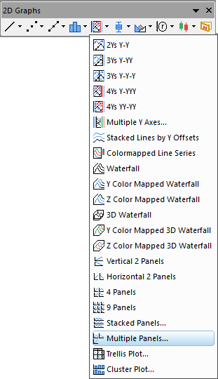
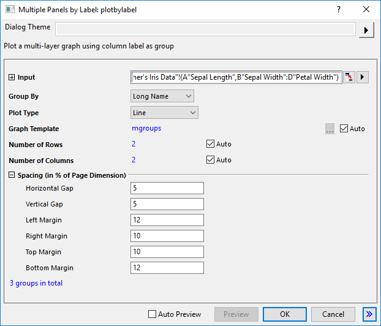
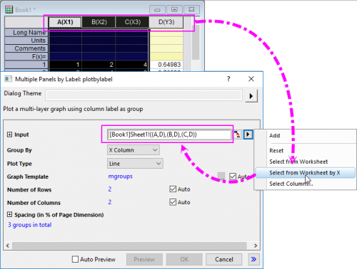

Diagramm mit mehreren Feldern
MultiPanel-Graph

Datenanforderungen
Wählen Sie mindestens eine Y-Datenspalte (oder einen Bereich aus mindestens einer Spalte) aus. Für jede Y-Spalte stellt die X-Spalte die X-Werte bereit, wenn es eine verbundene X-Spalte gibt; ansonsten wird ein Abtastintervall der Y-Spalte oder Zeilennummer verwendet.
Diagramm erstellen
Wählen Sie die erforderlichen Daten aus
Wählen Sie .
oder
Klicken Sie auf die Schaltfläche Mehrere Felder auf der Symbolleiste 2D Grafiken.

Hierdurch öffnet sich der Dialog plotbylabel.

Legen Sie die Angaben für Gruppe nach, Diagrammtyp, Diagrammvorlage, Gruppenplatzierung, Anordnung der Felder und Abstände zwischen den Feldern für die ausgewählten Datensätze fest. Klicken Sie auf OK, um das Diagramm zu erzeugen. Weitere Einzelheiten zu diesem Dialog finden Sie auf dieser Seite.
Vorlage
MGROUPS.OTPU (installiert im Origin-Programmordner).
Hinweise
- Sie können die Anzahl der Zeichnungen in der Auswahlliste Gruppe nach auswählen, um die Anzahl der Zeichnung in jeder Gruppe zum Aufteilen der Eingabezeichnungen in separate Layer zu verwenden.
- Sie können das Kontrollkästchen Alle Gruppen in einem Layer aktivieren, um alle Zeichnungen in die gleichen Layer unter verschiedenen Gruppen zu einzufügen. Sobald Sie dieses Kontrollkästchen aktiviert haben, können die Knoten alle nicht mehr bearbeitet werden.
- Wenn Sie mehrere aufeinanderfolgende X-Spalten und dann eine anschließende Y-Spalte haben wie in XXXY, können Sie die Option Aus Arbeitsblatt nach X auswählen im Ausklappmenü auswählen, um mehrere XY-Bereiche als Eingabe auszuwählen.

- Das Diagramm mit mehreren Feldern nach Beschriftung enthält mehrere Layer. Die Anzahl der Layer wird von der Anzahl der Gruppen der Eingabedaten bestimmt. Die Eingabedaten werden entsprechend der Spaltenbeschriftungszeile oder X-Spalten gruppiert, die für den Gruppe nach gewählt wurden.
- Sie können die Bedienelemente Allgemeine Anzeige des Dialogs Details Zeichnung für die gleichzeitige Bearbeitung von Layer-, Zeichnungs- und Achseneigenschaften in einer Grafik mit mehreren Layern verwenden. Weitere Informationen finden Sie unter Bedienelemente der Registerkarte Layer im Dialog Details Zeichnung.
- Sie können eine Diagrammvorlage festlegen, indem Sie das Bedienelement Diagrammvorlage verwenden, um die mit der Vorlage gespeicherten Formate auf die Felder anzuwenden. Standardmäßig wird die Standardvorlage mgroups.optu für die Felder verwendet.